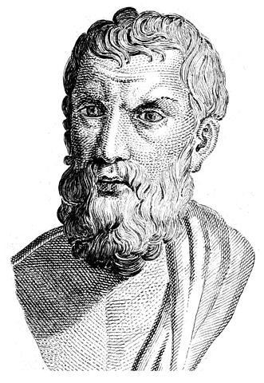

Epicuro de Samos

Epicuro de Samos (- 341 a - 271)
Epicuro nació en la isla de Samos, a pesar de lo cual fue un ciudadano ateniense, pues su padre, Neocles, había sido uno de los colonos que, partiendo de Atenas, había marchado a Samos dotado con un lote de tierras. El padre de Epicuro fue maestro, por lo que es probable que éste comenzase a interesarse pronto por las cuestiones intelectuales. Al parecer a los 14 años ya había comenzado a estudiar filosofía y se había hecho discípulo del filósofo platónico Pánfilo. Es posible que a partir de este encuentro Epicuro adopte su postura anti-idealista contra la concepción platónica y sus postulados básicos (la existencia de dos mundos, sensible e inteligible, la existencia de un alma inmortal, etc.). Cuatro años más tarde le encontramos en Atenas realizando el servicio militar. Podemos suponer que durante esa primera visita a la capital de la filosofía Epicuro se impregnó del ambiente cultural, pero no tenemos información al respecto de su primer viaje a Atenas.
Cuando quiso volver a su hogar su familia había tenido que trasladarse desde Samos a Colofón, pues los propietarios originales de las tierras que habían sido cedidas a colonos como Neocles habían vuelto, gracias a una amnistía política. En Colofón tuvo Epicuro como maestro a Nausífanes, un filósofo atomista que probablemente ejerció una gran influencia en Epicuro, a pesar de que éste criticó duramente a su maestro y nunca quiso reconocerse como su discípulo, llegando a afirmar que había sido un "autodidacta". Tras los diez años de estancia en Colofón, Epicuro se instala en Mitilene, y posteriormente en Lampsaco, donde abre su primera escuela filosófica.
Sin embargo, será en el año 306 cuando Epicuro vuelva a Atenas y se instale definitivamente. Allí comprará una casa y un pequeño terreno para su escuela, que ha sido tradicionalmente denominada "El jardín", aunque probablemente se tratase de un simple huerto, retirado del bullicio de la ciudad, donde tanto Epicuro como sus más allegados discípulos y amigos podían dedicarse a la reflexión y a la conversación sin ser molestados. Esta escuela ofrecía un modelo alternativo a la Academia que había fundado Platón y al Liceo de Aristóteles, en las cuales el tipo de educación era de un alto nivel científico pero no conllevaba necesariamente una actitud moral ante la vida, rasgo predominante de la filosofía epicúrea, así como de prácticamente todas las escuelas helenísticas (estoicos, cínicos, etc.). El jardín se apartaba también de otras escuelas al admitir a mujeres y a esclavos entre los alumnos, algo poco corriente en la época, que dio lugar a críticas y comentarios despectivos que daban por supuesto que la escuela de Epicuro, malinterpretando además sus ideas sobre el placer y su hedonismo, era un lugar para el desenfreno en banquetes y lujos cuando lo cierto es que la vida de Epicuro fue sencilla, humilde y tranquila, siendo su ejemplo para sus discípulos su mayor creación.
Filosofia de Epicuro
El epicureísmo: La filosofía de Epicuro se caracteriza por situarse en el lado opuesto a la filosofía platónica: afirma una sola realidad, el mundo sensible; niega la inmortalidad del alma y afirma que ésta, al igual que todo lo demás, está formada por átomos; postula el hedonismo en la teoría ética y como modo de vida y rechaza el interés por la política, optando por un estilo de vida sencillo y autosuficiente encaminado a la felicidad
Conclusiones
Epicuro valoraba como placer fundamental la tranquilidad del alma (ataraxía) y la ausencia de dolor (aponía): “la ausencia de turbación y de dolor son placeres estables; en cambio, el goce y la alegría resultan placeres en movimiento por su vivacidad". Su forma de pensar en esta vida era que todo lo que tenías que hacer era ser libre, y no depender de nadie, vivir como te parezca si la ignorancia es tu elección adelante y si deseas ser un conocedor eres bienvenido a este mundo.